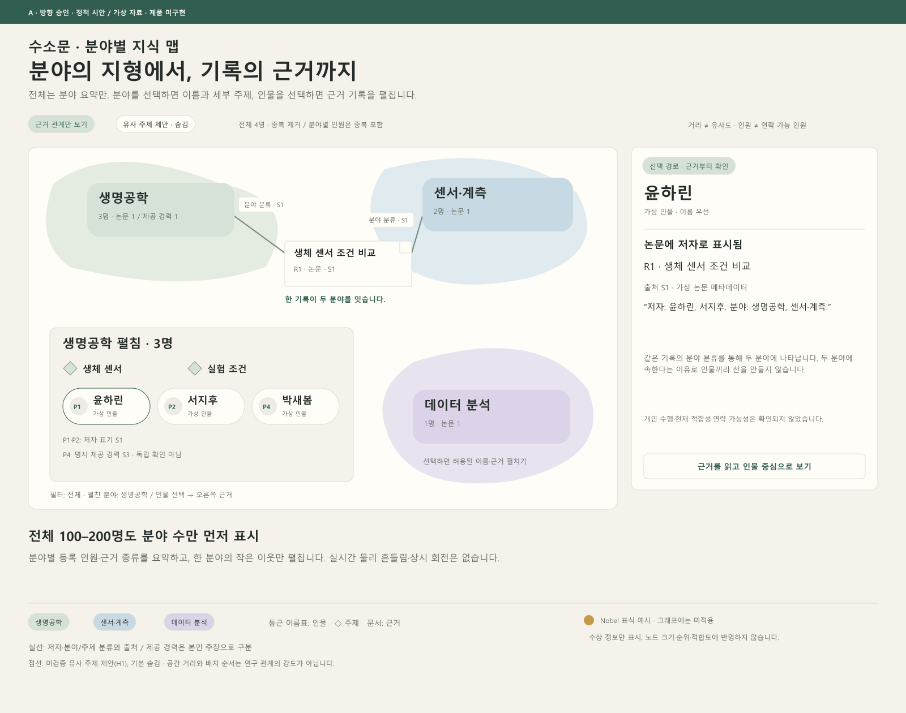
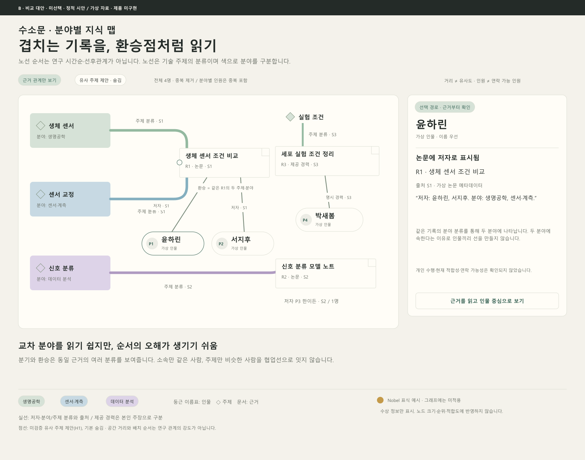
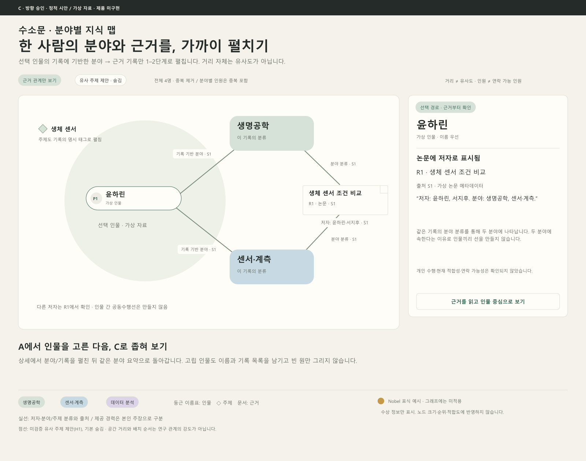

장점
분야 요약에서 이름과 근거까지 단계적으로 좁힐 수 있습니다. 100–200명을 처음부터 작은 점으로 밀어 넣지 않습니다.
FIELDS → PEOPLE → EVIDENCE
승인된 방향은 A 분야 군집 개요에서 인물을 고르고, C 방사형 상세에서 분야·논문·제공 경력의 근거를 읽는 조합입니다. B 노선도는 비교 대안으로 남겨 두었습니다.
A 기본 탐색 + C 상세 · 방향 승인추천 방향 승인 · 정적 시안 검토 / 모든 그래프 자료는 가상 · 제품 미구현 · 세부 표현은 검토용
SAME FICTIONAL DATA / A

분야 요약에서 이름과 근거까지 단계적으로 좁힐 수 있습니다. 100–200명을 처음부터 작은 점으로 밀어 넣지 않습니다.
부드러운 경계가 실제 연구 유사도 분포로 오해되지 않도록 분야 분류·근거 수를 표시해야 합니다.
SAME FICTIONAL DATA / B

같은 기록이 여러 기술 주제로 분류된 지점을 환승점처럼 읽을 수 있습니다.
노선 순서가 연구 시간순·선후관계로 보이기 쉽습니다. 선은 기술 주제 분류이고, 노선 정렬에는 의미가 없음을 계속 보여줘야 합니다.
SAME FICTIONAL DATA / C

선택한 한 사람의 분야와 근거를 1–2단계로 읽기 좋습니다. A의 상세 보기로 연결하기 쉽습니다.
처음부터 알고 있는 인물이 없으면 전체 탐색 출발점으로는 제한적입니다.
SMALL SCOPE / READABLE NAMES
분야 필터를 먼저 적용하며 필터 밖 인물을 자동 표시·선택하지 않습니다. 선택 인물의 교차 분야 태그는 관계 설명용이고 인물을 추가하는 필터 변경이 아닙니다. 전체를 한 화면에 축소하지 않습니다. 선택 분야의 이름 목록을 기본 대안으로 제공하고, 교차 분야는 공통 기록 한 개부터 읽습니다. 1명과 0명도 별도 빈 그래프로 확대하지 않습니다.
WHY THIS LINE EXISTS
저자: 윤하린, 서지후. 분야: 생명공학, 센서·계측. 주제: 생체 센서, 센서 교정.
2026-09-01(가상)
가상 시안 자료. 저자 표기는 직접 실험 수행 확인이 아님.
저자: 한이든. 분야: 데이터 분석. 주제: 신호 분류.
2026-09-02(가상)
가상 시안 자료. 개인 수행·적합도·연락 가능성 미확인.
박새봄 제공: 세포 실험 조건 정리. 분야: 생명공학. 주제: 실험 조건.
2026-09-03(가상)
명시적으로 제공한 주장으로 표시하며 독립 인증이 아님.
색은 분야, 둥근 이름표는 인물, 마름모는 주제, 문서 모양은 논문·제공 경력입니다. 텍스트 범례를 함께 둡니다. 주제의 가까움은 레이아웃이고, 유사도를 약속하지 않습니다.
호버 또는 선택한 경로만 부드럽게 강조하는 방향입니다. 전체 흔들림과 상시 회전은 사용하지 않습니다. 키보드·터치에서도 같은 경로를 선택하고 목록으로 돌아갈 수 있어야 합니다. 이 정적 시안에는 모션·클릭 기능이 없으며 성능·접근성·이해도는 미검증입니다.
Nobel 금빛은 수상 표식만 뜻합니다. 노드 크기·순위·적합도 점수로 쓰지 않으며, 가상 인물에게 수상 경력을 붙이지 않았습니다.
기존 승인 AI 일러스트 · 이름 우선
그래프의 가상 자료와 연결하지 않은 화풍 참고
기존 공개 그림을 그대로 사용했습니다.
이번에 새 초상이나 카드 등급 효과를 만들지 않았습니다.